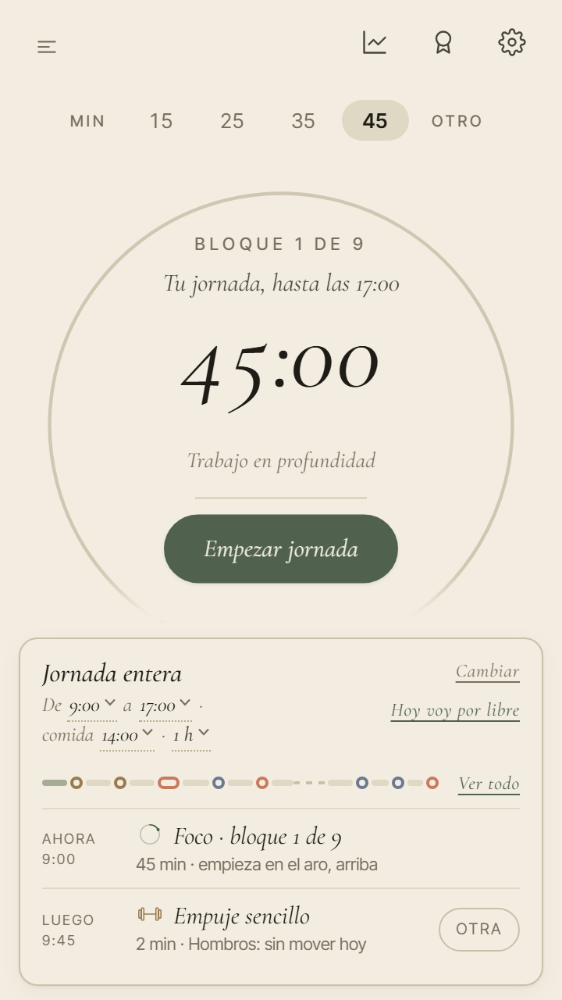
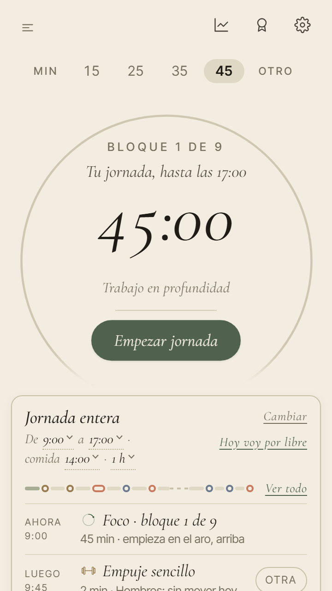
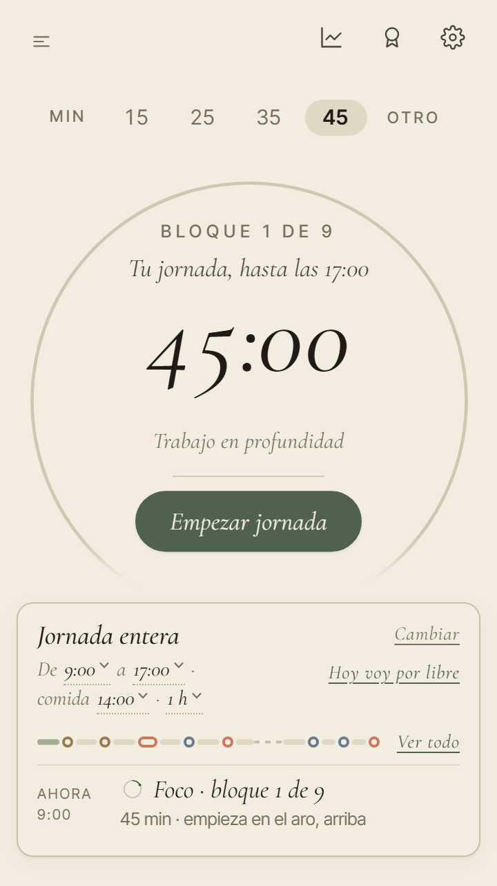
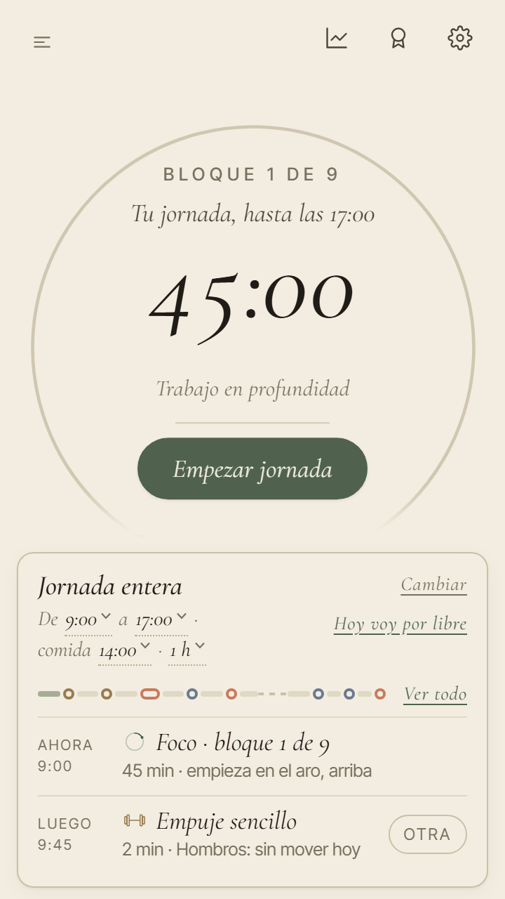

<title>Dos preguntas de la octava</title>
<meta name="claude:viewport-fit-sides" content="cover">
<link rel="stylesheet" href="https://fonts.googleapis.com/css2?family=Cormorant+Garamond:ital,wght@1,500&family=Inter+Tight:wght@400;500;600&display=swap">
<style>
/* Dos preguntas, cada una con sus opciones a la vista. La primera lleva capturas de PACE a 360 × 640
   (fotos/), con la letra agrandada como la agranda Android; la segunda, una línea de la noche con un
   punto por pasada. Paleta y letras de PACE (DESIGN_SYSTEM.md). */
:root {
  --paper: #F2EDE0; --paper-2: #EAE4D4; --ink: #1F1C17; --ink-2: #4A453C; --ink-3: #6F695B;
  --line: #D6CDB6; --focus: #3E5A3A; --focus-soft: rgba(62, 90, 58, 0.10);
  --terra: #9E4F33; --terra-soft: rgba(158, 79, 51, 0.10);
  --serif: 'Cormorant Garamond', Georgia, 'Times New Roman', serif;
  --sans: 'Inter Tight', system-ui, -apple-system, 'Segoe UI', sans-serif;
}
@media (prefers-color-scheme: dark) { :root:not([data-theme="light"]) {
  --paper: #1d1a14; --paper-2: #26211a; --ink: #EDE5D3; --ink-2: #c0b49e; --ink-3: #B2A995;
  --line: #4d4536; --focus: #98B58B; --focus-soft: rgba(152, 181, 139, 0.14);
  --terra: #E8A98F; --terra-soft: rgba(232, 169, 143, 0.13); color-scheme: dark; } }
:root[data-theme="dark"] {
  --paper: #1d1a14; --paper-2: #26211a; --ink: #EDE5D3; --ink-2: #c0b49e; --ink-3: #B2A995;
  --line: #4d4536; --focus: #98B58B; --focus-soft: rgba(152, 181, 139, 0.14);
  --terra: #E8A98F; --terra-soft: rgba(232, 169, 143, 0.13); color-scheme: dark; }
* { box-sizing: border-box; }
body { background: var(--paper); color: var(--ink); font-family: var(--sans); font-size: 16px; line-height: 1.55; }
.hoja { max-width: 780px; margin: 0 auto; padding-left: max(16px, env(safe-area-inset-left, 0px)); padding-right: max(16px, env(safe-area-inset-right, 0px)); padding-block: 36px 64px; display: flex; flex-direction: column; gap: 44px; }
h1, h2 { font-family: var(--serif); font-style: italic; font-weight: 500; text-wrap: balance; margin: 0; }
h1 { font-size: clamp(38px, 8vw, 52px); line-height: 1.02; }
h2 { font-size: 29px; line-height: 1.1; }
h3 { margin: 0; font-size: 12px; letter-spacing: 0.12em; text-transform: uppercase; color: var(--ink-3); font-weight: 600; }
p { margin: 0; max-width: 64ch; color: var(--ink-2); }
b { color: var(--ink); font-weight: 600; }
.eyebrow { font-size: 12px; letter-spacing: 0.14em; text-transform: uppercase; color: var(--ink-3); }
header, section { display: flex; flex-direction: column; gap: 16px; }
.nota { font-size: 14px; color: var(--ink-3); }
.responde { border: 1px solid var(--line); border-radius: 14px; padding: 12px 14px; background: var(--paper-2); }

/* Las opciones: dos por fila, una en el móvil. La recomendada lleva borde y etiqueta. */
.opciones { display: grid; grid-template-columns: repeat(2, minmax(0, 1fr)); gap: 12px; }
@media (max-width: 620px) { .opciones { grid-template-columns: minmax(0, 1fr); } }
.op { border: 1px solid var(--line); border-radius: 16px; padding: 14px; display: flex; flex-direction: column; gap: 10px; min-width: 0; }
.op.rec { border-color: var(--focus); background: var(--focus-soft); }
.op .letra { font-family: var(--serif); font-style: italic; font-size: 30px; line-height: 1; color: var(--ink); white-space: nowrap; }
.op .cab { display: flex; align-items: baseline; gap: 10px; flex-wrap: wrap; }
.op .t { font-weight: 600; color: var(--ink); }
.op p { font-size: 14.5px; }
.chip { font-size: 11px; letter-spacing: 0.08em; text-transform: uppercase; font-weight: 600; color: var(--focus); border: 1px solid var(--focus); border-radius: 999px; padding: 1px 8px; }
.mide { font-size: 12.5px; font-weight: 600; font-variant-numeric: tabular-nums; }
.mide.bien { color: var(--focus); } .mide.mal { color: var(--terra); }

/* Las capturas son siempre de PACE en claro: llevan su propio marco para leerse igual en oscuro. */
.foto { display: block; width: 100%; max-width: 250px; height: auto; margin: 2px auto; border: 1.5px solid var(--ink-3); border-radius: 18px; }
.pie { text-align: center; font-size: 13px; color: var(--ink-3); }

/* La noche: una línea de 22:00 a 02:00, con la medianoche marcada y un punto por pasada. */
.noche { display: flex; flex-direction: column; gap: 12px; padding-top: 6px; }
.fila { display: grid; grid-template-columns: 78px minmax(0, 1fr); gap: 10px; align-items: center; font-size: 13px; color: var(--ink-2); }
.eje { position: relative; height: 30px; border-bottom: 1.5px solid var(--line); }
.eje::before { content: ''; position: absolute; left: 50%; top: 0; bottom: -4px; width: 1.5px; background: var(--ink-3); }
.pto { position: absolute; bottom: -6px; width: 11px; height: 11px; margin-left: -5.5px; border-radius: 50%; background: var(--focus); }
.pto span { position: absolute; bottom: 14px; left: 50%; transform: translateX(-50%); font-size: 11px; color: var(--ink-2); white-space: nowrap; font-variant-numeric: tabular-nums; }
.pto.mal { background: var(--paper); border: 1.5px dashed var(--terra); }
.pto.mal span { color: var(--terra); }
.horas { display: grid; grid-template-columns: 78px minmax(0, 1fr); gap: 10px; font-size: 11px; color: var(--ink-3); }
.horas div { display: flex; justify-content: space-between; }
</style>

<main class="hoja">
  <header>
    <div class="eyebrow">PACE · la octava revisión · 12 de noviembre de 2026</div>
    <h1>Dos preguntas</h1>
    <p>Salieron al comprobar la octava revisión. Lo demás que se montó no pide nada tuyo. Cada pregunta trae sus opciones
      a la vista y la que recomiendo.</p>
    <p class="responde"><b>Contesta con las letras</b>, por ejemplo «1 A2 · 2 B».</p>
  </header>

  <section>
    <h2>1 · La home con la letra grande de Android</h2>
    <p>Quien pone la letra del sistema más grande en su Android ve también más grande la de PACE. Elegiste que la home
      no pida scroll hasta el 115 %. <b>Medido, hoy no cabe</b> en los móviles medianos: con el día servido se salen
      36 px por abajo y la fila de «Luego» queda cortada. Con la letra normal no cambia nada.</p>
    <h3>Lo que pasa hoy</h3>
    <div class="opciones">
      <div class="op">
        
        <p class="pie">Letra normal · <span class="mide bien">cabe entera</span></p>
      </div>
      <div class="op">
        
        <p class="pie">Letra al 115 % · <span class="mide mal">se salen 36 px</span></p>
      </div>
    </div>

    <h3>Las cuatro salidas, con la letra al 115 %</h3>
    <div class="opciones">
      <div class="op rec">
        <div class="cab"><span class="letra">A2</span><span class="t">La tarjeta enseña solo «Ahora»</span><span class="chip">Recomendada</span></div>
        
        <p class="pie"><span class="mide bien">cabe: 0 px</span></p>
        <p>Con la letra grande, la fila de «Luego» se guarda; sigue a un toque, en «Ver todo». No se pierde ningún
          botón de arriba y se lee lo que toca ahora.</p>
      </div>
      <div class="op">
        <div class="cab"><span class="letra">A1</span><span class="t">Se guarda la fila de minutos</span></div>
        
        <p class="pie"><span class="mide bien">cabe: 1 px</span></p>
        <p>Con la letra grande desaparece «Min 15 25 35 45 Otro». La tarjeta se queda entera, pero cambiar la duración
          del bloque dejaría de estar ahí y habría que decidir dónde va.</p>
      </div>
      <div class="op">
        <div class="cab"><span class="letra">B</span><span class="t">Se acepta el scroll</span></div>
        
        <p class="pie"><span class="mide mal">se desliza 36 px</span></p>
        <p>No se toca nada. Con la letra por encima de la normal hay que deslizar para ver «Luego». Es lo más barato,
          y deja de cumplirse «sin scroll» para quien agranda la letra.</p>
      </div>
      <div class="op">
        <div class="cab"><span class="letra">C</span><span class="t">PACE no agranda su letra</span></div>
        
        <p class="pie"><span class="mide bien">cabe siempre</span></p>
        <p>La letra de PACE se queda como está aunque el móvil la pida más grande. Cabe siempre, pero le quita la
          letra grande justo a quien la necesita para leer.</p>
      </div>
    </div>
    <p class="nota">Capturas de PACE 0.200.1 a 360 × 640, con el día servido y la letra agrandada como la agranda Android.
      A1 y A2 están pintadas escondiendo esa parte sobre la app, sin tocar el código: al montarla afino los huecos y te
      la enseño. Con la pausa abierta salen igual (caben las dos). Probé también a guardar las dos líneas del horario:
      no basta, siguen sobrando 16 px. Con la tarjeta corta sobran 21 px y no hay «Luego» que guardar: ahí hará falta
      recoger otra cosa, y lo mido al montarla.</p>
  </section>

  <section>
    <h2>2 · Las pruebas de noche, en verano</h2>
    <p>Los fallos de fecha salen cerca de la medianoche, así que desde ahora GitHub pasa las pruebas también de noche:
      una antes de las doce y otra después, además de los lunes a las 08:00. GitHub no sabe de horario de verano:
      <b>al cambiar la hora en marzo, las dos pasadas se corren una hora más tarde</b> y ninguna cae ya antes de la medianoche.</p>
    <div class="noche">
      <div class="horas"><span></span><div><span>22:00</span><span>23:00</span><span>medianoche</span><span>01:00</span><span>02:00</span></div></div>
      <div class="fila"><span>Invierno</span><div class="eje"><div class="pto" style="left:37.5%"><span>23:30</span></div><div class="pto" style="left:62.5%"><span>00:30</span></div></div></div>
      <div class="fila"><span>Verano, A</span><div class="eje"><div class="pto mal" style="left:37.5%"><span>falta</span></div><div class="pto" style="left:62.5%"><span>00:30</span></div><div class="pto" style="left:87.5%"><span>01:30</span></div></div></div>
      <div class="fila"><span>Verano, B</span><div class="eje"><div class="pto" style="left:37.5%"><span>23:30</span></div><div class="pto" style="left:62.5%"><span>00:30</span></div><div class="pto" style="left:87.5%"><span>01:30</span></div></div></div>
    </div>
    <div class="opciones">
      <div class="op">
        <div class="cab"><span class="letra">A</span><span class="t">Dejarlo y cambiarlo en marzo</span></div>
        <p>Dos pasadas de noche. En marzo alguien tiene que acordarse de mover las horas; si no, todo el verano falta
          la de antes de las doce.</p>
      </div>
      <div class="op rec">
        <div class="cab"><span class="letra">B</span><span class="t">Añadir ya la de verano</span><span class="chip">Recomendada</span></div>
        <p>Una pasada más cada noche, y las dos quedan cubiertas todo el año sin tocar nada. No cuesta dinero: el
          repositorio es público. Cada pasada tarda unos 11 minutos.</p>
      </div>
    </div>
    <p class="nota">Las horas están comprobadas en el archivo de GitHub. Una cosa más: GitHub no garantiza la hora.
      La primera noche, con una avería suya, las pasó a las 04:13 y a las 05:03.</p>
  </section>
</main>
